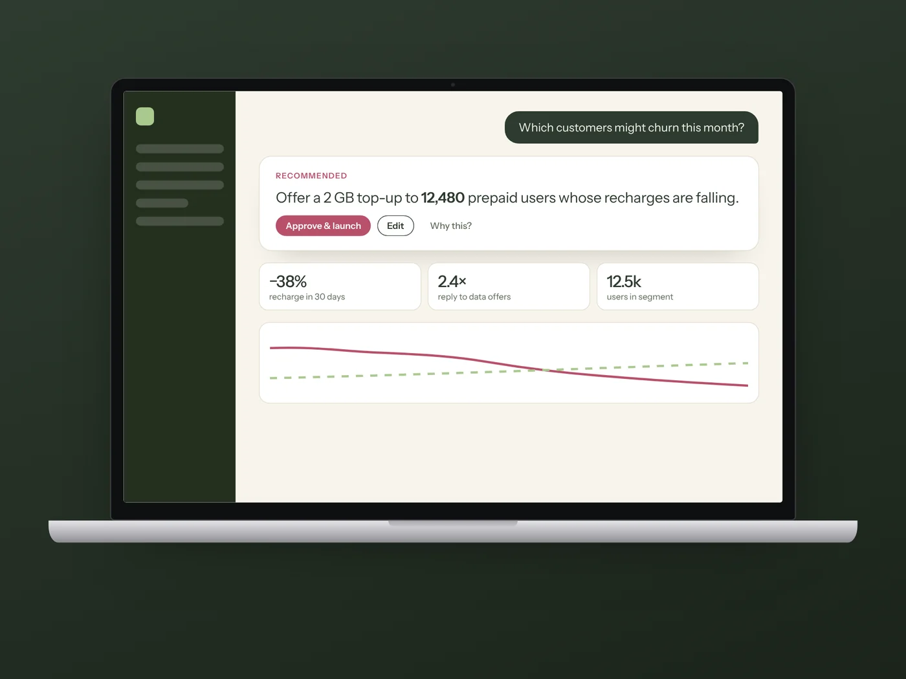
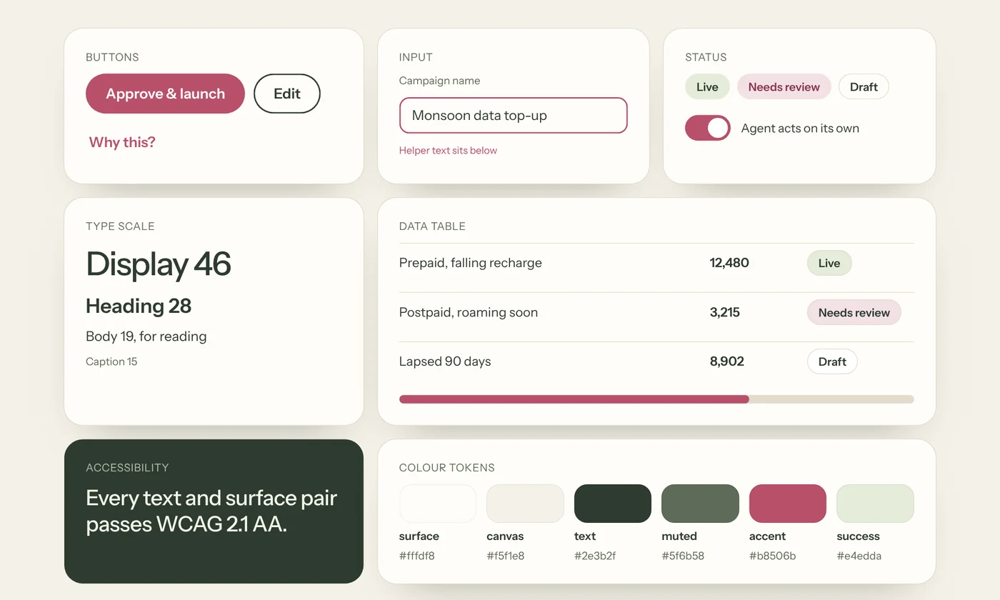

Usha Tapal · Product designer, Bengaluru
Turning complex B2B and AI tools into products people can use quickly.
−30%task time on an AI-native CVM
+25%onboarding completion
4+ yrsenterprise, AI and design systems
Etisalat · BICS · Smart · MTN Ghanatelecom clients I designed for
Featured work
Client case studies are password protected
Case study

01 · 6D Technologies · Agentic AIMAGIK, an AI-driven CVM platformDense telemetry became one clear recommendation people approve. −30% task time.
Case study AARYAVisual Intelligence Hub 02 · Designing for AIAARYAMaking the AI legible: what it’s doing, its guardrails, goal-first prompts.
Case study
03 · Systems6D DLS, a design language systemTokens, components and docs that ended drift and slow handoff.
More work
I trained as an architect, so I design products the way I designed buildings: people first, structure next, detail last.
Based in Bengaluru, India.